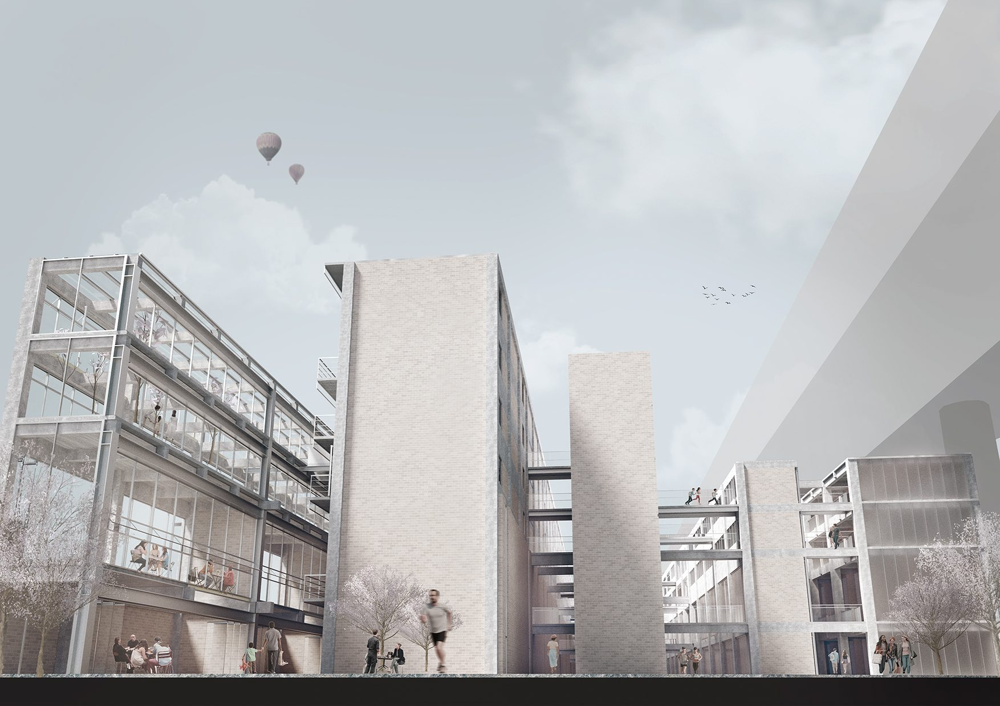
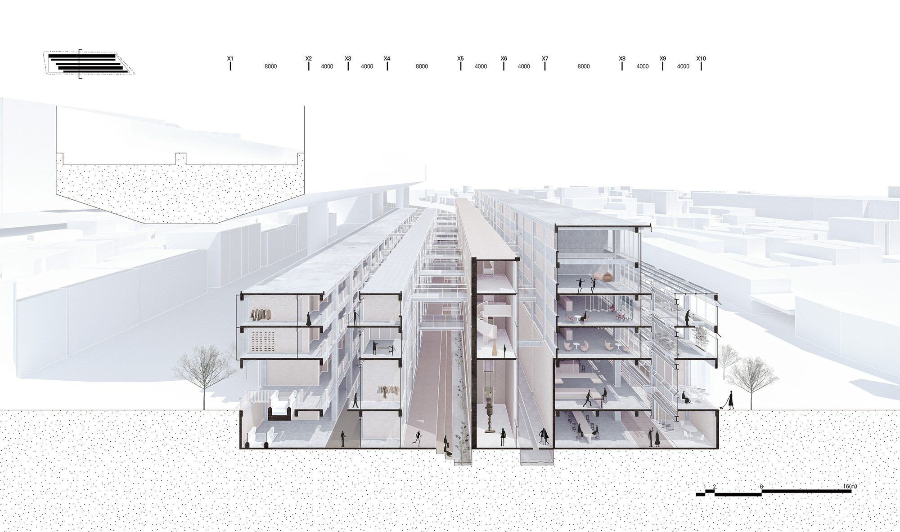
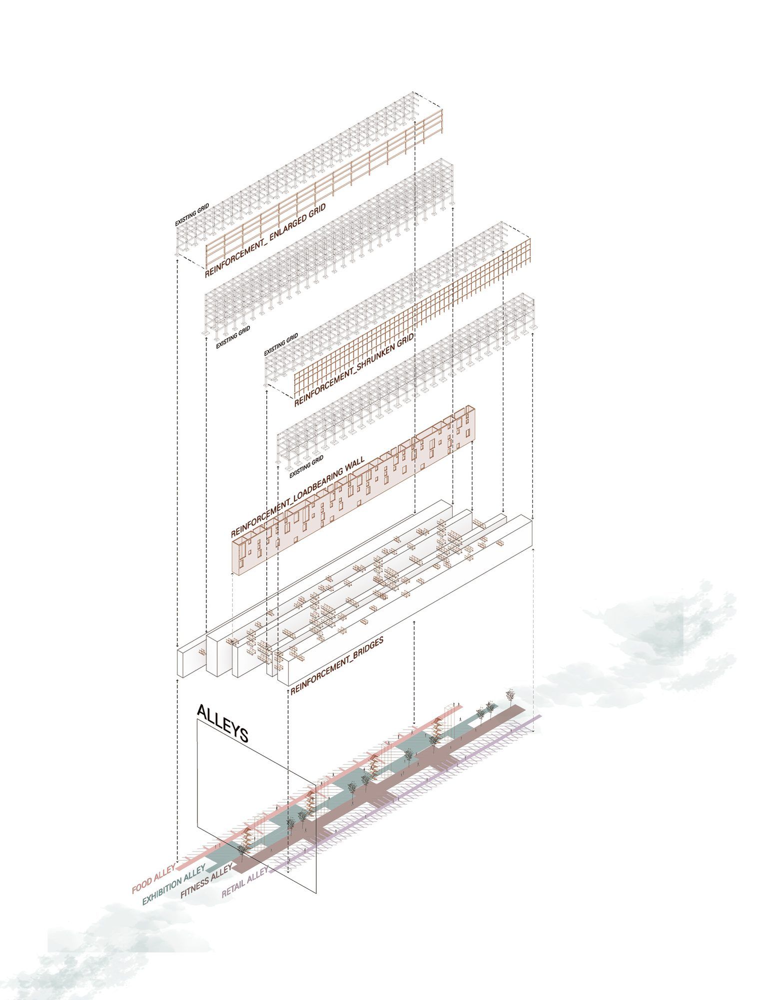
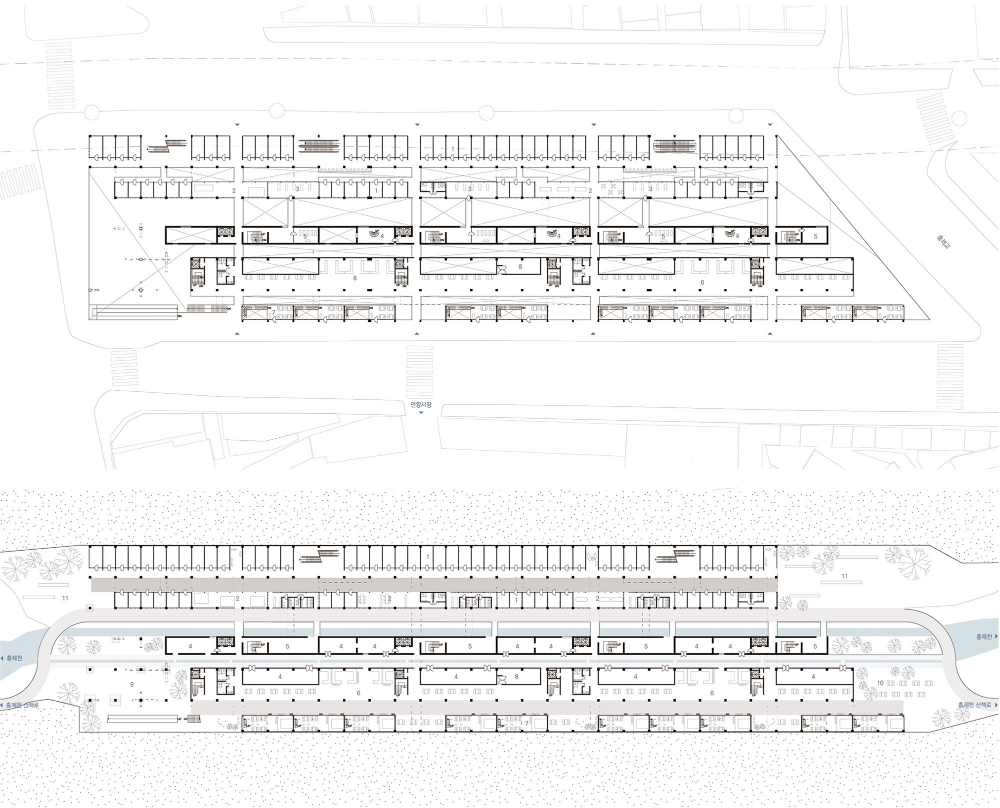
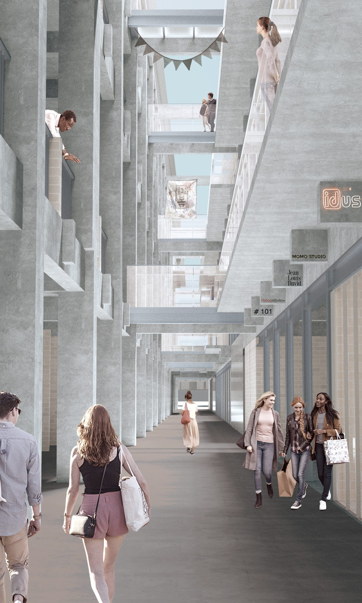
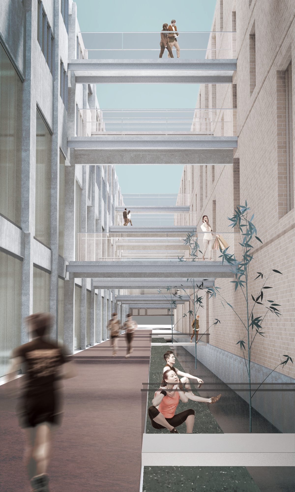
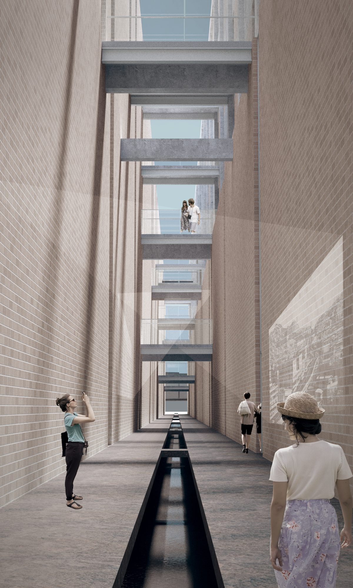
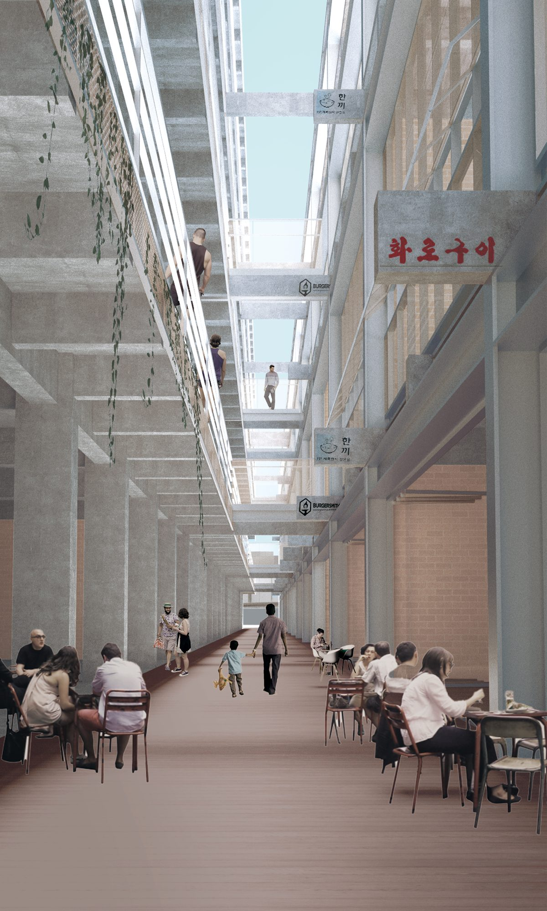

Yujin Mansion is two buildings in one: a shopping centre on the ground floor and housing above, sitting under an elevated highway. The location that makes it poor housing makes it good commercial ground. The project takes that seriously — Yujin Mansion becomes Yujin MansionS.
What was going wrong
The indoor market had been declining for years, its customer base fixed by an ageing local population and its sales falling to roughly half. The residential units were too large for the residents left in them, and the conditions under the overpass were poor. Part of the building had already been demolished. The site had been through two rounds of urban regeneration without the underlying mismatch being addressed.
Rather than chase the existing customers, the project aims at two groups already passing: people shopping at Inwang market, and people walking along Hongjecheon. The commercial programme is revived, and food and beverage, fitness and exhibition are made to coexist with it.

Cutting alleys into a 200-metre building
The site is over 200 metres long, and the long spaces that follow from it seemed worth keeping. So instead of subdividing across, the existing mass is divided lengthwise to form alleys. Programmes that had been stacked vertically and kept apart are reorganised into four parallel alleys, each holding its own function.



Four alleys, four structures
Each alley needs something different, so the structural reinforcement that creates it is tuned to match. The commercial alley uses a dense grid to carry many small tenants. The fitness alley has walls with openings for natural ventilation. The exhibition alley keeps openings to a minimum for immersion. The food and beverage alley uses a comfortable long-span grid.



From the stream to the sky
The alleys are cut vertically as well as horizontally. They open the view from the basement level, where Hongjecheon runs, all the way up to the sky — which is what makes a building pinned under an overpass feel comfortable to stand in.
